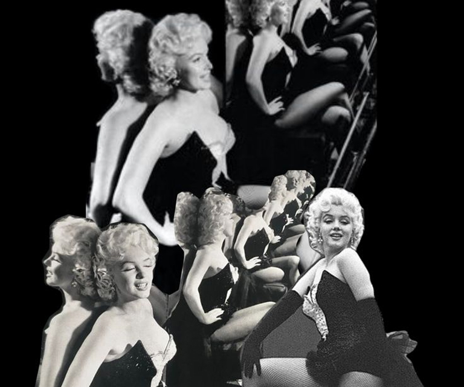

1953
Gentlemen Prefer Blondes
Marilyn plays Lorelei, a charming showgirl who believes that diamonds are a girl„s best friend. With wit, confidence, and dazzling performance, she became a fashion and pop-culture icon.
This role defined her signature «blonde bombshell» image.